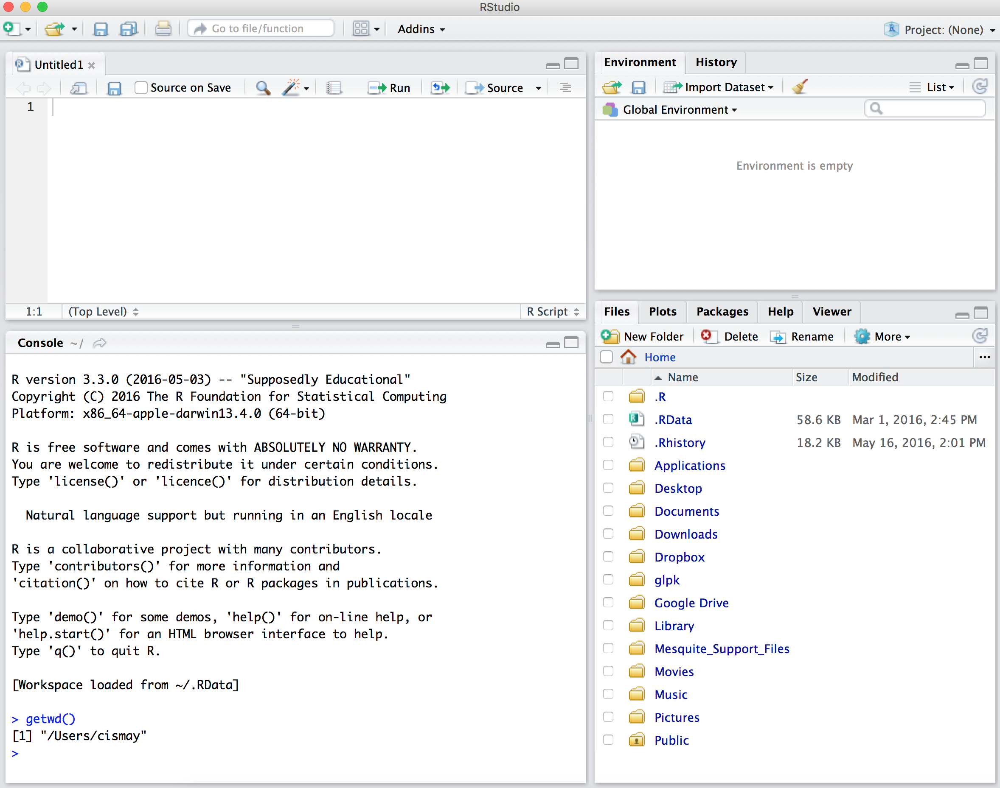

Creating a basic template package in R
The developers of RStudio have made creating R packages quite easy. The creation of an R Markdown template as the only thing residing in a package is an even easier task.
Check working directory
If we look down at the Console in the left pane, we can see what our current working directory is. If you click the right arrow next to Console it will show your Current Working Directory in the Files tab in the bottom right pane.
It’s important to keep track of where you keep files in R via this working directory and this is commonly a big struggle that students have. We see here that my home directory is the current working directory denoted by the ~/. We can see this by entering getwd() in the Console.

Install devtools
If you don’t have it installed already, make sure to run install.packages("devtools") in your Console. This will install a package of tools that makes creating packages simple. More info is available here.
Create package
We now invoke the create() function to create a package called “basictemplate” in the Console.
devtools::create("basictemplate")We see that a new folder has been created in my working directory called basictemplate.
If we click on this basictemplate folder we see the files and folders that were created.
Create skeleton directory
We now need to create a special path to specify a template file. Remember that case matters in R too! We are going to use the dir.create function to create nested directories:
dir.create("basictemplate/inst/rmarkdown/templates/report/skeleton",
recursive = TRUE)We could call it something other than report here if we liked.
If we click on the inst folder and continue clicking on the subsequent folders until the end, we have an empty folder called skeleton. This is where we will put an Rmd file that we will call skeleton.Rmd.
Create skeleton.Rmd
Let’s create a basic R Markdown file and then tweak it a bit before saving it here as skeleton.Rmd. We go File -> New File -> R Markdown. We could customize the boxes here but let’s just hit OK and we will customize later.
The default R Markdown document is now here. We see that we are creating an html_document. Let’s delete some of these lines of code to better fit our needs. Let’s rename the title to be “Basic Report” and delete all lines of code below line 5. At this point we are at a true bare bones document.
Let’s add a few chunk holders for R code and provide some headings. Let’s add Overview, Load data, Data visualization, Analysis, and Discussion as headings and some blank R chunks as well. We could just stop there and that would be the template file. Since we frequently want to invoke using R in chunks in the R Markdown file, let’s add a little bit to an R chunk and include some packages that we’d never work without.
We include a chunk called load_data, and we will include code to load some of Hadley’s packages. We add a few more chunks and name them.
We then save the file. Remember that this file needs to be saved as skeleton.Rmd in the skeleton folder.
Create template.yaml
An often overlooked step is the creation of the template.yaml file. We do so here by doing File -> New File -> Text file. We then type name followed by a colon and the name of our template. It’s important to enter a new line after the name you have given.
Now save the file as template.yaml in the folder containing the skeleton folder. Here it is the report folder.
Install package
The final step is to install our package:
devtools::install("basictemplate")Test template file
We can now test that the template is working by entering the New R Markdown dialog as before, but selecting From Template from the menu. We now see Basic Report.
Click on that and then hit OK. What opens up is that same template file we created before. One way to think about this is as follows: if you were distributing a template like this, each student would have the same starting point. This makes grading IMMENSELY more efficient since students are likely going to follow along with the template you have provided.
Note that it is also good practice to modify the DESCRIPTION file to be more informative for the package, but we will skip that for brevity here. It’s also good practice to store these packages on GitHub and use version control to keep track of modifications. Excellent tutorials are available here from Karl Broman and here from Hadley Wickham.